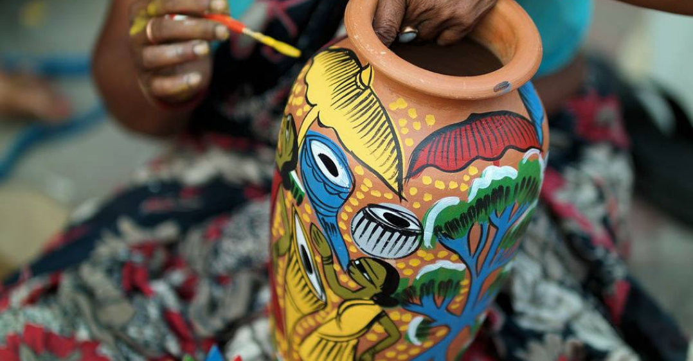
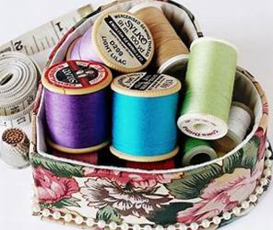

-Introduction -

In a world often dominated by mass production and uniformity,
handmade products stand out as unique gems, crafted with skill,
care, and passion. These products carry with them a rich
tapestry of tradition, creativity, and individuality that simply
cannot be replicated by machines. From intricately woven
textiles to delicately carved wooden artifacts, handmade goods
reflect the artistry and ingenuity of human hands.
Hanging Bells

Sewing Box